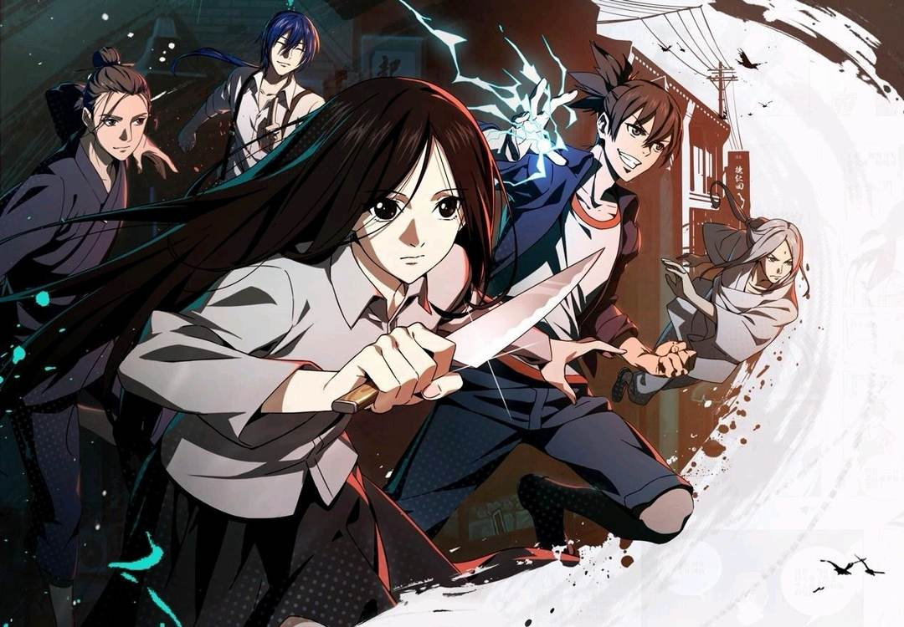

“Khí” - điểm khởi đầu của một thế giới đậm màu phương Đông
Một trong những khái niệm quan trọng nhất của Nhất Nhân Chi Hạ là “khí”. Trong tác phẩm, dị nhân thông qua việc vận dụng khí để hình thành các loại công pháp và năng lực khác nhau. Khái niệm này có nguồn gốc từ tư tưởng triết học Trung Hoa và đặc biệt gắn với hệ thống tư tưởng Đạo giáo.
Điều đáng chú ý là tác giả không sử dụng “khí” như một loại năng lượng chung chung. Từ một nền tảng duy nhất, truyện phát triển thành nhiều phương thức tu luyện khác nhau, tùy thuộc vào truyền thừa và quan niệm của từng môn phái.
Nhờ vậy, “khí” vừa đóng vai trò hệ thống sức mạnh, vừa trở thành sợi dây liên kết các lớp văn hóa trong truyện. Đạo giáo, võ thuật, thuật số hay tín ngưỡng dân gian không tồn tại tách biệt mà cùng được giải thích thông qua một cơ chế chung.
Đạo giáo được biến thành hệ thống vận hành của thế giới
Đạo giáo xuất hiện với mật độ dày đặc trong Nhất Nhân Chi Hạ. Long Hổ Sơn, Võ Đang, Toàn Chân, các loại phù lục, lôi pháp hay kim quang chú đều được chuyển hóa thành những yếu tố trực tiếp tham gia vào cốt truyện. Nhiều trong số đó có nguồn gốc từ truyền thống Đạo giáo ngoài đời thực.
Điểm đặc biệt nằm ở cách tác phẩm đưa những khái niệm vốn khá xa lạ với độc giả trẻ vào một thế giới hiện đại. Thay vì đặt nhân vật trong bối cảnh cổ trang, tác giả để các đạo sĩ, thuật pháp và truyền thừa tồn tại song song với xã hội đương đại.
Sự kết hợp này tạo nên một thế giới có hai tầng: bên ngoài là đời sống hiện đại quen thuộc, bên trong là một hệ thống dị nhân được duy trì qua nhiều thế hệ. Chính sự chồng lớp ấy khiến chất truyền thống trong truyện không bị tách khỏi đời sống hiện đại.
Từ kỳ môn độn giáp đến Bát Kỳ Kỹ
Nhất Nhân Chi Hạ còn đưa thuật số và tư tưởng âm dương, bát quái vào cấu trúc năng lực. Kỳ Môn Độn Giáp, chẳng hạn, không chỉ xuất hiện như một thuật pháp có hình thức kỳ bí mà trở thành cơ chế để nhân vật thao tác với không gian và trận thế.
Bát Kỳ Kỹ tiếp tục mở rộng cách tiếp cận này. Mỗi kỹ năng có một nguồn gốc, phương thức vận hành và triết lý riêng, khiến hệ thống sức mạnh không đơn thuần là cuộc cạnh tranh xem ai có năng lực lớn hơn. Một số nghiên cứu, bình luận về tác phẩm cũng ghi nhận việc truyện kết hợp thuật số, Đạo giáo và nhiều hình thức truyền thống khác để tạo nên hệ thống năng lực.
Nhờ vậy, kiến thức văn hóa được chuyển thành một phần của logic kể chuyện. Người đọc càng hiểu những khái niệm phía sau, càng có thêm cơ sở để đọc các trận đấu và năng lực của nhân vật ở nhiều tầng nghĩa khác nhau.
Tín ngưỡng dân gian bước vào thế giới dị nhân
Nếu Đạo giáo tạo nên phần khung lý thuyết thì tín ngưỡng dân gian khiến thế giới Nhất Nhân Chi Hạ trở nên đa dạng hơn. Tiêu biểu là hệ thống “Xuất Mã Tiên” và các tín ngưỡng liên quan đến linh vật, đồng cốt và quan niệm giao tiếp giữa con người với những thực thể siêu nhiên.
Những yếu tố này khác với hình ảnh đạo sĩ thường thấy trong văn hóa đại chúng. Chúng gắn với đời sống dân gian, truyền thuyết địa phương và những cách lý giải thế giới tồn tại ngoài hệ thống tôn giáo chính thống.

Việc đưa chúng vào cùng một thế giới với Đạo giáo tạo nên một bức tranh văn hóa không đồng nhất. Nhất Nhân Chi Hạ không xây dựng truyền thống Trung Hoa như một hệ thống duy nhất, mà cho thấy sự tồn tại song song của nhiều dòng tín ngưỡng và thực hành dân gian.
“Truyền thống” không đồng nghĩa với “cổ xưa”
Một điểm đáng chú ý của tác phẩm là các yếu tố truyền thống không bị đóng khung trong quá khứ. Nhân vật sử dụng điện thoại, đi xe, làm việc trong các tổ chức hiện đại, trong khi những công pháp và tín ngưỡng lâu đời vẫn tồn tại bên cạnh họ.
Sự tương phản này giúp văn hóa truyền thống trở nên gần gũi hơn. Một đạo sĩ không nhất thiết phải xuất hiện trong đạo bào giữa núi sâu; một thế lực dị nhân cũng có thể hoạt động dưới vỏ bọc của một tổ chức hiện đại.
Qua đó, tác phẩm đặt truyền thống vào một bối cảnh mới thay vì chỉ tái hiện nó. Văn hóa trở thành thứ có khả năng thích nghi, biến đổi và tiếp tục tồn tại trong đời sống đương đại.
Khi yếu tố dân gian không chỉ để tạo “chất Trung Hoa”
Điểm quan trọng nhất trong cách xây dựng thế giới của Nhất Nhân Chi Hạ là các yếu tố văn hóa không tồn tại độc lập với nhân vật và cốt truyện. Mỗi truyền thừa, môn phái hay thuật pháp đều góp phần tạo nên cách nhân vật nhìn nhận sức mạnh, con người và thế giới.
Điều này giúp tác phẩm tránh được việc sử dụng văn hóa truyền thống như những chi tiết trang trí. Một lá bùa, trận pháp hay nghi thức xuất hiện trong truyện đều có thể trở thành một phần của hệ thống sức mạnh và câu chuyện.
Vì thế, sức hấp dẫn của Nhất Nhân Chi Hạ không chỉ nằm ở việc nó đưa nhiều yếu tố phương Đông vào manga. Điều đáng chú ý hơn là tác phẩm đã biến những chất liệu ấy thành ngôn ngữ xây dựng thế giới: từ “khí” tạo ra hệ thống sức mạnh, Đạo giáo hình thành các truyền thừa, thuật số tạo nên cơ chế năng lực, còn tín ngưỡng dân gian mở rộng chiều sâu văn hóa của thế giới dị nhân.